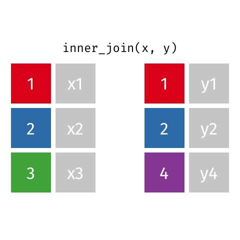
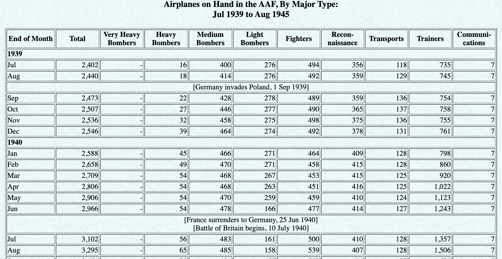
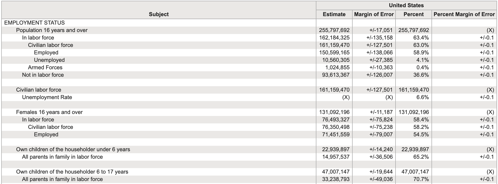
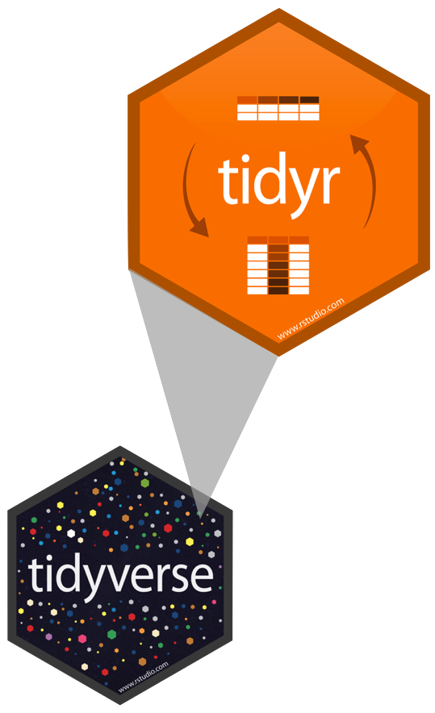
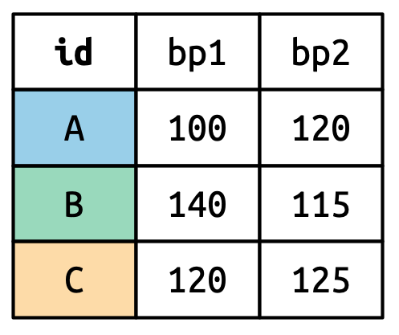
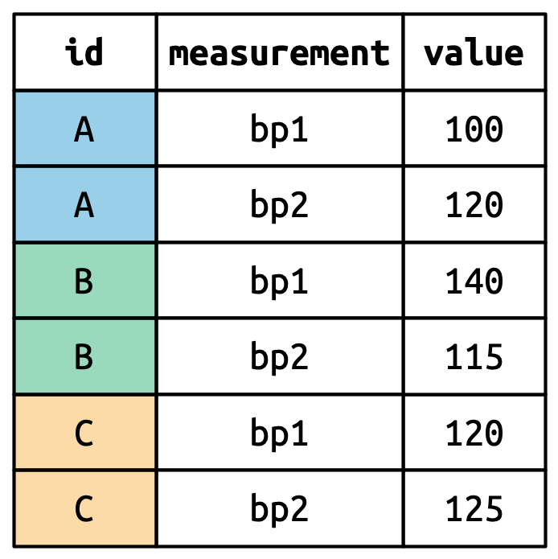

# A tibble: 935 × 26
id firstname surname year category affiliation city country born_date
<dbl> <chr> <chr> <dbl> <chr> <chr> <chr> <chr> <date>
1 1 Wilhelm Co… Röntgen 1901 Physics Munich Uni… Muni… Germany 1845-03-27
2 2 Hendrik A. Lorentz 1902 Physics Leiden Uni… Leid… Nether… 1853-07-18
3 3 Pieter Zeeman 1902 Physics Amsterdam … Amst… Nether… 1865-05-25
4 4 Henri Becque… 1903 Physics École Poly… Paris France 1852-12-15
5 5 Pierre Curie 1903 Physics École muni… Paris France 1859-05-15
6 6 Marie Curie 1903 Physics <NA> <NA> <NA> 1867-11-07
7 6 Marie Curie 1911 Chemist… Sorbonne U… Paris France 1867-11-07
8 8 Lord Raylei… 1904 Physics Royal Inst… Lond… United… 1842-11-12
9 9 Philipp Lenard 1905 Physics Kiel Unive… Kiel Germany 1862-06-07
10 10 J.J. Thomson 1906 Physics University… Camb… United… 1856-12-18
# ℹ 925 more rows
# ℹ 17 more variables: died_date <date>, gender <chr>, born_city <chr>,
# born_country <chr>, born_country_code <chr>, died_city <chr>,
# died_country <chr>, died_country_code <chr>, overall_motivation <chr>,
# share <dbl>, motivation <chr>, born_country_original <chr>,
# born_city_original <chr>, died_country_original <chr>,
# died_city_original <chr>, city_original <chr>, country_original <chr>05 - Importation et jointure de données
PRO1036 - Analyse de données scientifiques en R
Tim Bollé
October 17, 2025
Importation de données
Présentations

readr
- read_csv() - fichiers CSV
- CSV: comma-separated values - valeurs séparées par des virgules
- read_csv2() - fichiers CSV mais où le séparateur est un point-virgule
- Commun dans les pays où le séparateur décimal est la virgule
- read_tsv() - fichiers TSV
- TSV: tab-separated values - valeurs séparées par des tabulations
- read_delim() - fichiers avec un délimiteur spécifique
- On peut spécifier le délimiteur avec l’argument
delim
- On peut spécifier le délimiteur avec l’argument
- …
readxl
- read_excel() - Permet de lire des fichiers Excel
Lecture de fichiers
Noms des varaibles
Le nom des variables n’est pas toujours optimal.
[1] "ID" "Price" "neighbourhood"
[4] "accommodates" "Number of bathrooms" "Number of Bedrooms"
[7] "n beds" "Review Scores Rating" "Number of reviews"
[10] "listing_url" Et R n’aime pas les noms de variables avec des espaces.
Option 1: Spécifier les noms des variables à l’importation
edibnb_col_names <- read_csv("data/edibnb-badnames.csv",
col_names = c("id", "price",
"neighbourhood", "accommodates",
"bathroom", "bedroom",
"bed", "review_scores_rating",
"n_reviews", "url"))
names(edibnb_col_names) [1] "id" "price" "neighbourhood"
[4] "accommodates" "bathroom" "bedroom"
[7] "bed" "review_scores_rating" "n_reviews"
[10] "url" Option 2: Utiliser le format snake_case
- Les espaces sont remplacés par des underscores
- Les lettres sont en minuscules
Nous pouvons utiliser la fonction janitor::clean_names()
Gestion des types de données
Spécification des NAs
Spécification des types de chaque colonne
Les types de colonnes
| Fonction | Types de données |
|---|---|
col_character() |
Chaine de caractères |
col_date() |
Date |
col_datetime() |
POSIXct (date-time) |
col_double() |
Double (numeric) |
col_factor() |
Factor |
col_guess() |
Laisse readr deviner ( par défaut) |
col_integer() |
Entier |
col_logical() |
Logique |
col_number() |
Nombre et texte mélangés |
col_numeric() |
Double ou entier |
col_skip() |
Ne pas lire la colonne |
col_time() |
Temps |
Jointure de données
Kesako
Lorsque nous avons des données dans plusieurs fichiers/tables, il est souvent nécessaire de les combiner.
Données: Les femmes dans la science
Nous avons des informations sur 10 femmes qui ont changé le monde. Les informations sont réparties dans trois fichiers:
professions.csv: Information sur la profession de chacunedates.csv: date de naissance et de décès de chacuneworks.csv: Ce qu’elles ont fait pour changer le monde
professions.csv
# A tibble: 10 × 2
name profession
<chr> <chr>
1 Ada Lovelace Mathematician
2 Marie Curie Physicist and Chemist
3 Janaki Ammal Botanist
4 Chien-Shiung Wu Physicist
5 Katherine Johnson Mathematician
6 Rosalind Franklin Chemist
7 Vera Rubin Astronomer
8 Gladys West Mathematician
9 Flossie Wong-Staal Virologist and Molecular Biologist
10 Jennifer Doudna Biochemist dates.csv
# A tibble: 8 × 3
name birth_year death_year
<chr> <dbl> <dbl>
1 Janaki Ammal 1897 1984
2 Chien-Shiung Wu 1912 1997
3 Katherine Johnson 1918 2020
4 Rosalind Franklin 1920 1958
5 Vera Rubin 1928 2016
6 Gladys West 1930 NA
7 Flossie Wong-Staal 1947 NA
8 Jennifer Doudna 1964 NAworks.csv
# A tibble: 9 × 2
name known_for
<chr> <chr>
1 Ada Lovelace first computer algorithm
2 Marie Curie theory of radioactivity, discovery of elements polonium a…
3 Janaki Ammal hybrid species, biodiversity protection
4 Chien-Shiung Wu confim and refine theory of radioactive beta decy, Wu expe…
5 Katherine Johnson calculations of orbital mechanics critical to sending the …
6 Vera Rubin existence of dark matter
7 Gladys West mathematical modeling of the shape of the Earth which serv…
8 Flossie Wong-Staal first scientist to clone HIV and create a map of its genes…
9 Jennifer Doudna one of the primary developers of CRISPR, a ground-breaking…Ce que nous voulons comme output
# A tibble: 10 × 5
name profession birth_year death_year known_for
<chr> <chr> <dbl> <dbl> <chr>
1 Ada Lovelace Mathematician NA NA first co…
2 Marie Curie Physicist and Chemist NA NA theory o…
3 Janaki Ammal Botanist 1897 1984 hybrid s…
4 Chien-Shiung Wu Physicist 1912 1997 confim a…
5 Katherine Johnson Mathematician 1918 2020 calculat…
6 Rosalind Franklin Chemist 1920 1958 <NA>
7 Vera Rubin Astronomer 1928 2016 existenc…
8 Gladys West Mathematician 1930 NA mathemat…
9 Flossie Wong-Staal Virologist and Molecular … 1947 NA first sc…
10 Jennifer Doudna Biochemist 1964 NA one of t…Types de jointures
left_join(): Retourne toutes les lignes de la première table et les lignes correspondantes de la deuxième tableright_join(): Retourne toutes les lignes de la deuxième table et les lignes correspondantes de la première tableinner_join(): Retourne les lignes qui ont une correspondance dans les deux tablesfull_join(): Retourne toutes les lignes des deux tablessemi_join(): Retourne toutes les lignes de la première table qui ont une correspondance dans la deuxième tableanti_join(): Retourne toutes les lignes de la première table qui n’ont pas de correspondance dans la deuxième table
Pour l’exemple…
left_join()

left_join()
# A tibble: 10 × 4
name profession birth_year death_year
<chr> <chr> <dbl> <dbl>
1 Ada Lovelace Mathematician NA NA
2 Marie Curie Physicist and Chemist NA NA
3 Janaki Ammal Botanist 1897 1984
4 Chien-Shiung Wu Physicist 1912 1997
5 Katherine Johnson Mathematician 1918 2020
6 Rosalind Franklin Chemist 1920 1958
7 Vera Rubin Astronomer 1928 2016
8 Gladys West Mathematician 1930 NA
9 Flossie Wong-Staal Virologist and Molecular Biologist 1947 NA
10 Jennifer Doudna Biochemist 1964 NAright_join()

right_join()
# A tibble: 8 × 4
name profession birth_year death_year
<chr> <chr> <dbl> <dbl>
1 Janaki Ammal Botanist 1897 1984
2 Chien-Shiung Wu Physicist 1912 1997
3 Katherine Johnson Mathematician 1918 2020
4 Rosalind Franklin Chemist 1920 1958
5 Vera Rubin Astronomer 1928 2016
6 Gladys West Mathematician 1930 NA
7 Flossie Wong-Staal Virologist and Molecular Biologist 1947 NA
8 Jennifer Doudna Biochemist 1964 NAfull_join()

full_join()
# A tibble: 10 × 3
name profession known_for
<chr> <chr> <chr>
1 Ada Lovelace Mathematician first computer algorit…
2 Marie Curie Physicist and Chemist theory of radioactivit…
3 Janaki Ammal Botanist hybrid species, biodiv…
4 Chien-Shiung Wu Physicist confim and refine theo…
5 Katherine Johnson Mathematician calculations of orbita…
6 Rosalind Franklin Chemist <NA>
7 Vera Rubin Astronomer existence of dark matt…
8 Gladys West Mathematician mathematical modeling …
9 Flossie Wong-Staal Virologist and Molecular Biologist first scientist to clo…
10 Jennifer Doudna Biochemist one of the primary dev…inner_join()

inner_join()
# A tibble: 8 × 4
name profession birth_year death_year
<chr> <chr> <dbl> <dbl>
1 Janaki Ammal Botanist 1897 1984
2 Chien-Shiung Wu Physicist 1912 1997
3 Katherine Johnson Mathematician 1918 2020
4 Rosalind Franklin Chemist 1920 1958
5 Vera Rubin Astronomer 1928 2016
6 Gladys West Mathematician 1930 NA
7 Flossie Wong-Staal Virologist and Molecular Biologist 1947 NA
8 Jennifer Doudna Biochemist 1964 NASi on reprend…
# A tibble: 10 × 5
name profession birth_year death_year known_for
<chr> <chr> <dbl> <dbl> <chr>
1 Ada Lovelace Mathematician NA NA first co…
2 Marie Curie Physicist and Chemist NA NA theory o…
3 Janaki Ammal Botanist 1897 1984 hybrid s…
4 Chien-Shiung Wu Physicist 1912 1997 confim a…
5 Katherine Johnson Mathematician 1918 2020 calculat…
6 Rosalind Franklin Chemist 1920 1958 <NA>
7 Vera Rubin Astronomer 1928 2016 existenc…
8 Gladys West Mathematician 1930 NA mathemat…
9 Flossie Wong-Staal Virologist and Molecular … 1947 NA first sc…
10 Jennifer Doudna Biochemist 1964 NA one of t…Tidy data
Tidy data
Happy families are all alike; every unhappy family is unhappy in its own way. – Leo Tolstoy
Qu’est ce que des données Tidy ?
- Chaque variable est une colonne
- Chaque observation est une ligne
- Chaque valeur est une cellule
Tidy data

Exemples
En quoi ces données ne sont pas tidy ?

En quoi ces données ne sont pas tidy ?

Source: Gapminder, Estimated HIV prevalence among 15-49 year olds
En quoi ces données ne sont pas tidy ?

Source: US Census Fact Finder, General Economic Characteristics, ACS 2017
Tidying data
Ce qu’on a…
# A tibble: 2 × 4
customer_id item_1 item_2 item_3
<dbl> <chr> <chr> <chr>
1 1 bread milk banana
2 2 milk toilet paper <NA> Ce qu’on veut…
# A tibble: 6 × 3
customer_id item_no item
<dbl> <chr> <chr>
1 1 item_1 bread
2 1 item_2 milk
3 1 item_3 banana
4 2 item_1 milk
5 2 item_2 toilet paper
6 2 item_3 <NA> Pour Tidyer: Tidyr

Tidyr permet de transformer les données pour les Tidy :
- Faire pivoter les données
- Séparer ou combiner des colonnes
- Imbriquer/Désimbriquer des colonnes
- Préciser commenter traiter les
NA
Pivoter les données

Wide vs Long
Forme large :

Forme longue :

Source: (Wickham et al., 2023, chap. 5)
Wide vs Long
Wide
Plus de colonnes
# A tibble: 2 × 4
customer_id item_1 item_2 item_3
<dbl> <chr> <chr> <chr>
1 1 bread milk banana
2 2 milk toilet paper <NA> Long
Plus de lignes
# A tibble: 6 × 3
customer_id item_no item
<dbl> <chr> <chr>
1 1 item_1 bread
2 1 item_2 milk
3 1 item_3 banana
4 2 item_1 milk
5 2 item_2 toilet paper
6 2 item_3 <NA> pivot_longer()
- data : Comme d’habitude
- cols : Colonne à pivoter
- names_to : Nom de la colonne où les variables vont être envoyées
- values_to : Nom de la colonne où les valeurs vont être envoyées
pivot_longer(
data,
cols,
names_to = "name",
values_to = "value"
)
Customer \(\rightarrow\) purchases
purchases <- customers %>%
pivot_longer(
cols = item_1:item_3, # variables item_1 à item_3
names_to = "item_no", # Noms des colonnes -> dans une nouvelle colonne item_no
values_to = "item" # valeurs pour chaque colonne -> dans une nouvelle colonne item
)
purchases# A tibble: 6 × 3
customer_id item_no item
<dbl> <chr> <chr>
1 1 item_1 bread
2 1 item_2 milk
3 1 item_3 banana
4 2 item_1 milk
5 2 item_2 toilet paper
6 2 item_3 <NA> pivot_wider()
- data : Comme d’habitude
- names_from : Colonne contenant les noms de colonnes
- values_from : Colonne contenant les valeurs
Références
Wickham, H., Çetinkaya-Rundel, M. and Grolemund, G. (2023). R for Data Science (2nd ed.). O’Reilly Media, Inc. https://r4ds.hadley.nz/

PRO1036 - 04 | Tim Bollé